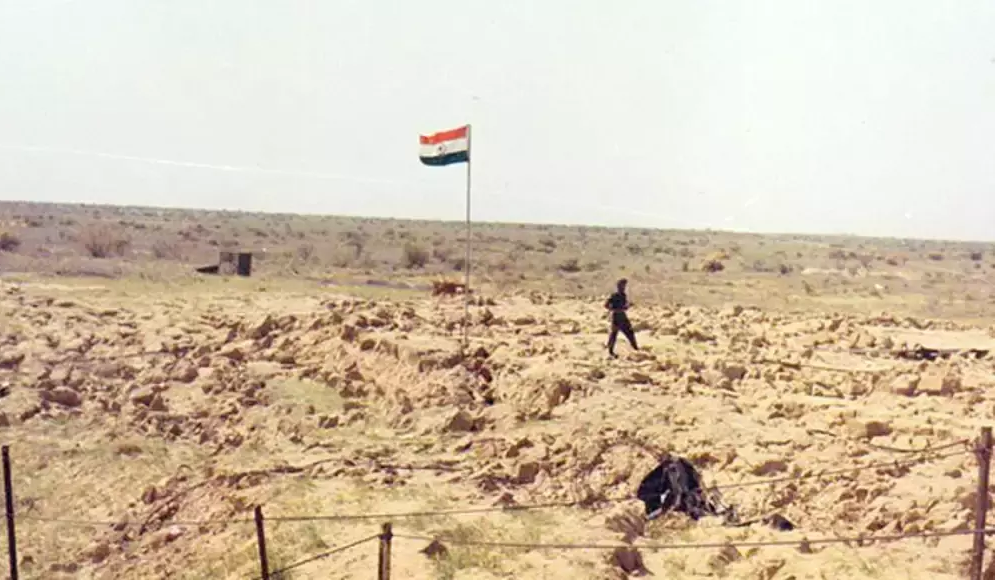

Virtual Museum: US Involvement in the Nuclear Program of India
This virtual museum explores America's involvement in the nuclear program of India. It features 16 key documents, pacts, videos, and images detailing the dissent that the United States had for India and other Southeast Asian countries of gaining nuclear
power. Despite America's disapproval, India managed to carry out two series of nuclear test, known as Pokhran-I (1974) and Pokhran-II (1998), respectively...

Pokhran: India's Nuclear Weapons Test Site
Arjun Gupta, May 2023. No rights reserved.